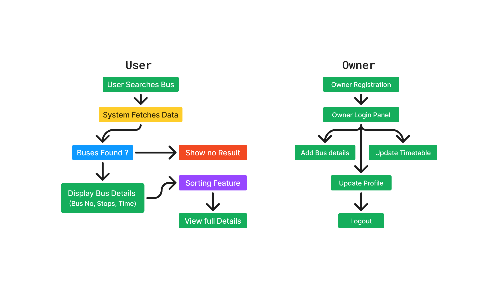

| Description: | The "Smart Bus Management System" is a web-based application that allows users to search for buses based on source and destination without registration. Bus owners can register, log in, and manage bus details, including updating schedules. The system stores bus information such as bus number, name, stops, departure, and arrival times. It features sorting options and an intuitive UI for easy navigation. Developed using Flask, SQLite, HTML, CSS, JavaScript, and responsive design, this project enhances public transport accessibility by streamlining bus scheduling and search functionality. It ensures efficient management and a seamless experience for both passengers and bus operators. |
| Workflow |  |
| Technologies Used: |
|
| Achievement: | Designed and developed both frontend and backend components independently. |
Extra work:
1. Documentation & Reporting:Created detailed documentation, including SRS, UI/UX designs, and testing reports.
Version Control: Used Git for efficient code management and tracking changes. View SRS